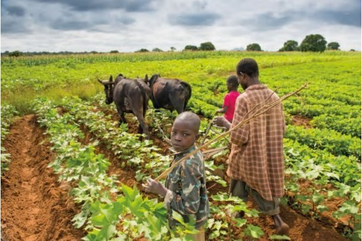

General Information
Explore valuable information about recommended equipment, eco-friendly farming practices, government policies, and more.

Recommended Equipment
Discover essential tools and machinery recommendations to enhance your animal husbandry practices and increase efficiency.
Learn MoreSustainable Livestock Farming
Embrace sustainable and eco-friendly farming practices to promote environmental conservation and long-term farm viability.
Learn More

Government Policies
Stay informed about relevant government policies affecting animal husbandry to ensure compliance and benefit from available support.
Learn MoreAdditional Resources
Explore various other aspects related to animal husbandry, including health tips, best practices, and industry trends.
Learn More